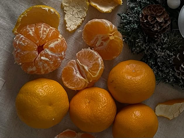

↢∘₊✧ღ’.◌🍊◌.’ღ✧₊∘↣
Сочные и яркие мандарины у многих людей с самого детства ассоциируются с зимой, Новым годом и ожиданием волшебства. И хотя сейчас этот цитрус можно встретить на прилавках магазинов круглогодично, именно в новогодний период вместе с запахом хвои мандарины приносят в дом ощущение уюта и праздника. Откуда же пришел к нам этот солнечный фрукт, как получил свое название и что будет, если его съесть слишком много – в материале?

Родина мандарина – Юго-Восточная Азия, а точнее – Китай. В одной из китайских рукописей 1178 года описывается 27 лучших сортов апельсинов и мандаринов. Кстати, ассоциация мандарина с Новым годом совсем не случайна. Традиция появилась в Китае примерно в 1000 году до нашей эры. Китаец, который пришел в гости на празднование Нового года, должен был вместе с другими подарками преподнести хозяевам два мандарина. Такой же дар – пару мандаринок, получал от хозяев перед уходом и сам гость. Смысл этого необычного обряда был в пожелании другу финансового благополучия и денежного года. Все дело в том, что словосочетание "пара мандарин" на китайском языке созвучно слову "золото", поэтому, даря мандарины, в дом привлекали деньги. А вот европейцы увидели мандарины только в XVI–XIX веках. По свидетельству некоторых источников, первое мандариновое дерево завез в Италию в 1840 году неаполитанец Мишель Тенор и научил итальянцев правильно выращивать фрукт. По другой версии, первые мандариновые деревья привезли в Европу в начале XIX века в подарок Наполеону. Сегодня мандарины получили распространение по всему миру, а их основными поставщиками являются Марокко, Испания, Аргентина и Сицилия. В Россию и Москву мандарины попадают в основном из Абхазии, Грузии и Марокко.

Существует несколько версий, как этот ароматный и яркий цитрус получил свое название. Известно, что остров Маврикий в Индийском океане раньше носил название Мандарин. Предполагают, что от названия этого острова и произошло название растения. По другой версии, название фрукту придумали все в том же Китае. А именно, его назвали так в честь правителей Древнего Китая. В то время этот маленький, но очень полезный цитрус считался большой роскошью, и есть его могли только самые богатые и знатные жители страны – мандарины.
Каждый из нас слышал в детстве сказки о целебных молодильных яблоках, как о желанном средстве излечения от старости. Но мало кто знает, что, по некоторым версиям, речь тут идет вовсе не о яблоках, а именно о мандаринах. Под золотыми целебными яблоками подразумевали яркие оранжевые цитрусы, действительно на редкость богатые витаминами. По версии некоторых древних историков, мандарины появились в Европе значительно раньше XVI–XIX веков, как принято считать. Так, древние греки стали называть их "цедрос", которое затем превратилось в "цитрус". О вкусных и полезных плодах – золотых яблоках, стали складывать мифы. По одному из них – "Яблоки Гесперид", драгоценные плоды, дающие человеку здоровье и силу, выращивались в саду дочерей титана Атланта и нимфы Геспериды. Они жили в саду, где росла "яблоня", приносившая золотые плоды. Воспевали чудесные свойства золотых яблок и скандинавы. У древних скандинавов существовала своя Василиса Прекрасная – богиня Идунн ("обновляющая"). Ей принадлежали золотые яблоки, благодаря которым боги сохраняли вечную молодость. В древнеиндийской мифологии напиток амрита (однотипный священному меду), обладал омолаживающим действием.
Как часто, принеся домой купленные мандарины, вместо наслаждения от сочных фруктов мы получали разочарование в виде подсохшего плода полного косточек. Как правило, в магазине внимание обращают только на внешний вид мандарина и его цену. Оказывается, в первую очередь стоит посмотреть, откуда именно привезли фрукты, которые затем окажутся на столе. Также при покупке стоит обратить внимание на внешний вид мандарина. Кожура не должна быть мягкой или наоборот подсохшей. На ней не должно быть пятен и мягких участков. Мандарины лучше съедать сразу, при длительном хранении этот сочный фрукт достаточно быстро портится.


О полезных свойствах мандаринов наслышаны все – этот цитрус просто кладезь необходимого организму витамина С. Кроме того, он утоляет жажду и даже помогает снижать температуру при простуде. Мандарины – это еще и прекрасный антидепрессант. Он способен успокоить нервную систему и повысить общий тонус организма. Одной из самых полезных частей мандарина является его корка, которая содержит множество полезных веществ. Она оказывает противовоспалительное действие, и может стать помощником при бронхите и сухом кашле. В народной медицине спиртовую настойку из кожуры мандаринов используют для улучшения аппетита. К сожалению, несмотря на свои полезные свойства, при неумелом потреблении мандарины могут и навредить. Этот цитрус сильно повышает кислотность и раздражает слизистую оболочку кишечника и желудка. Поэтому некоторым людям лучше совсем отказаться от его употребления. Отдельно стоит сказать о тех, кого при одном только упоминании о мандаринах бросает в жар, а лицо и тело немедленно покрывают красные пятна. Оказывается, самая распространенная причина появления аллергии на мандарины – это их переизбыток. Особенно это касается детей, если оставить их с мандаринами наедине. Они могут съесть за раз не один килограмм этого сладкого фрукта. А в зимнюю пору аромат мандаринов распространяется практически повсеместно – дети приносят их в школу, взрослые – на работу, угощая коллег. Мандарины настолько вкусны, что, порой, мы сами не замечаем, как съедаем уже пятый, расплачиваясь за это аллергией. Вывод один – следить не только за качеством в магазине, но и за количеством во время употребления. Лучше ограничить себя двумя-тремя фруктами в день.